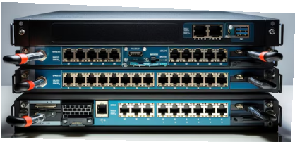
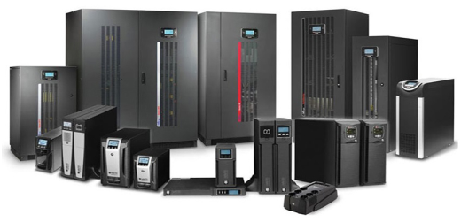
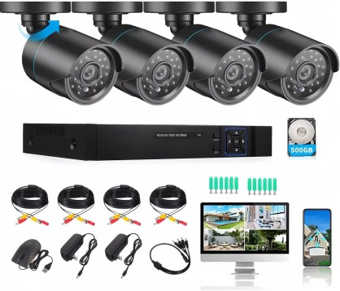

Our Services
Supply of IT Equipment
We supply high-quality and genuine IT equipment tailored to meet modern business and institutional needs, including:
- Desktop Computers
- Laptops
- Printers and Scanner
- Servers and Storage Devices







- Networking Equipment
- Computer Accessories
- UPS and Power Backup Systems
- CCTV Equipment
- Biometric Devices
IT Services


We provide comprehensive IT solutions designed to improve efficiency, reliability, and business continuity.
Our IT services include:
- IT Support and Maintenance
- Network Installation and Configuration
- LAN Installation and Structured Cabling
- Cloud Services and Email Solutions
- Cybersecurity Solutions
- Software Installation and Configuration
- Remote IT Support
- Data Backup and Recovery
- CCTV Installation and Maintenance
- Door Access Control Installation
- System Upgrades and Troubleshooting
- AI Consultancy Services
- Database Design and Management
- Solar Installations and Repair
- GPS Tracking and Fleet Management
- Office Phone installation
- Application/System Development and Maintenance
IT Consultancy Services

SALMIT Zambia offers professional consultancy services aimed at helping organizations optimize their technology infrastructure and improve operational efficiency.
Consultancy services include:
- ICT Infrastructure Assessment
- Technology Advisory Services
- Digital Transformation Support
- Cybersecurity Consultancy
- IT Project Management
- Network Design and Planning
- Systems Implementation Support
- ICT Policy and Procedure Development
AI Consultancy & Database Solutions
We assist organizations in leveraging Artificial Intelligence and modern database technologies to improve efficiency, automation, and data management.
Services include:
- AI Strategy Development
- Business Process Automation
- AI Chatbot Solutions
- Data Analytics and Reporting
- Database Design and Development
- SQL & NoSQL Database Management
- Data Migration and Optimization
- Backup and Disaster Recovery Solutions
IT Training Services


We provide practical and professional IT training programs tailored to equip individuals and organizations with essential digital and technology skills.
Training areas include:
- Basic Computer Skills
- Microsoft Office Applications
- Cybersecurity Awareness
- Networking Fundamentals
- Cloud Computing Basics
- IT Support Skills
- Digital Literacy Programs